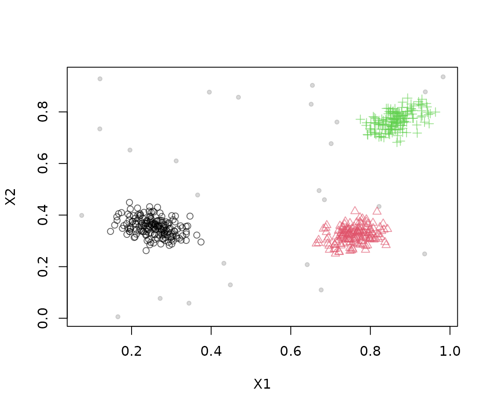
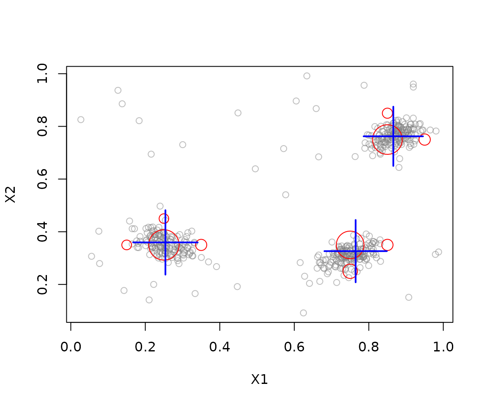
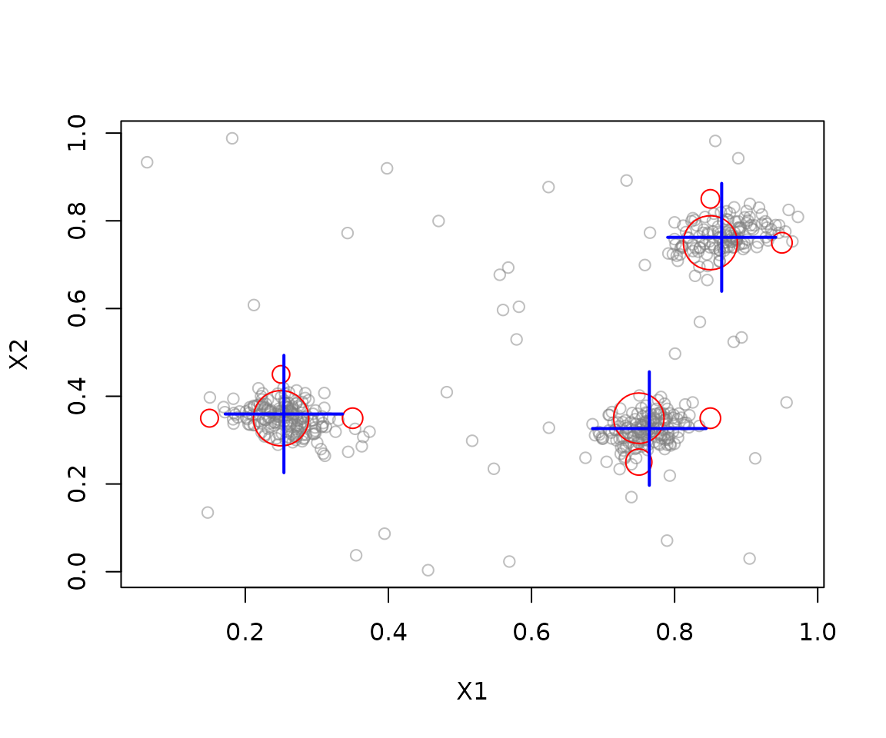
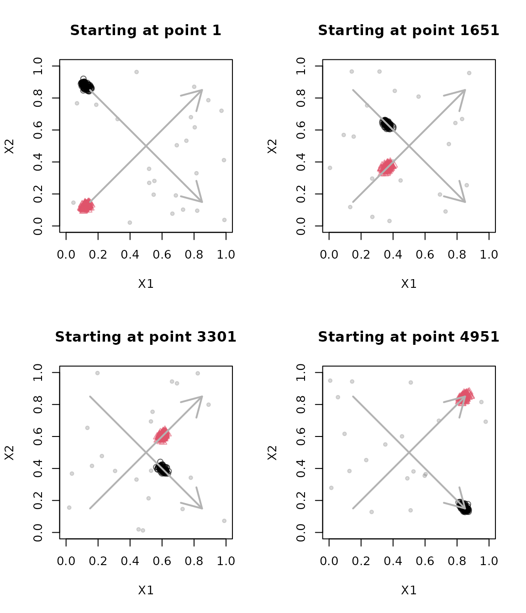
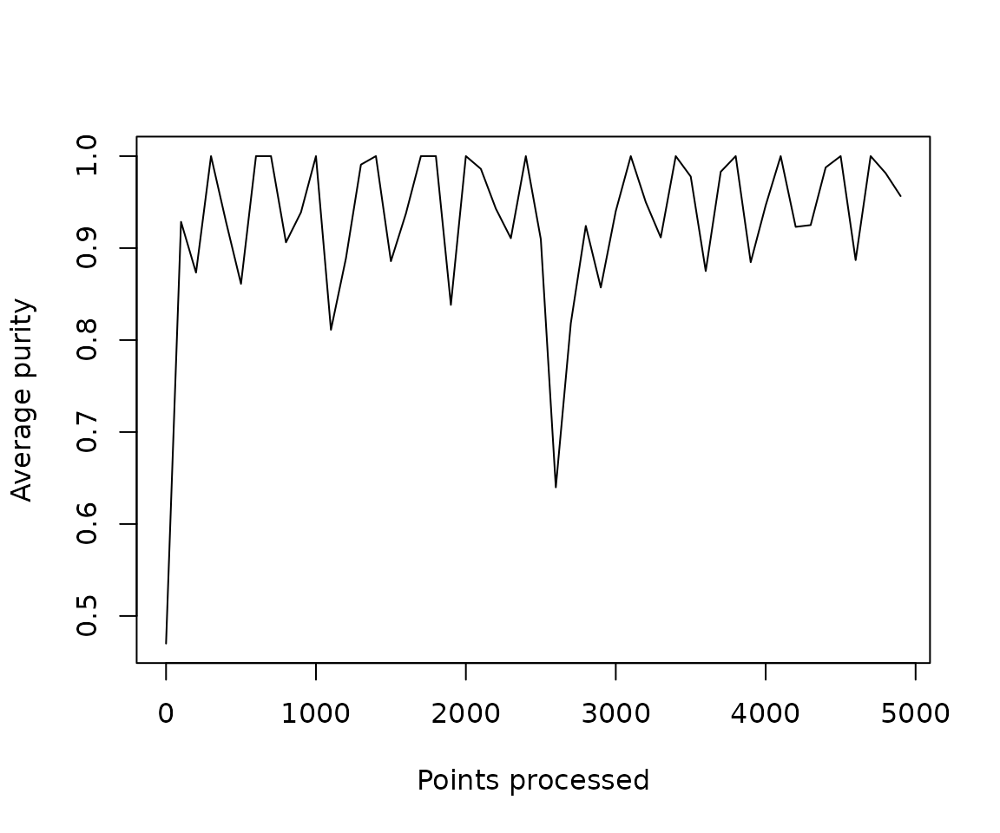

The stream package provides an R framework for data
stream mining. A data stream is a potentially unbounded sequence of
observations that can only be read once, in order, so models have to be
updated incrementally with limited memory. This guide introduces the
main building blocks of the package and walks through a complete
clustering workflow:
- Data stream data (DSD) objects generate or read points. They include simulated generators, replay of stored data, and files read in chunks.
- Data stream task (DST) are mining models that are updated with new points. This guide uses data stream clustering (DSC) objects, which combine online micro-clusters with offline macro-clusters.
- Evaluation measures the quality of a clustering on new points, either at one moment or continuously along the stream.
- Non-stationary streams have a distribution that changes over time (concept drift), so a model needs to forget outdated observations, and evaluation needs to be adapted to this setting.
Installation
Install the released package from CRAN, then load it in your R session:
install.packages("stream")Data streams (DSD)
Create and inspect a stream
DSD_Gaussians() generates points from randomly placed
Gaussian clusters. Here we create three clusters in two dimensions, with
5% of the points being noise. Setting the random seed makes simulated
data reproducible.
set.seed(1000)
stream <- DSD_Gaussians(k = 3, d = 2, noise = 0.05)
stream
#> Gaussian Mixture (d = 2, k = 3)
#> Class: DSD_Gaussians, DSD_R, DSDA stream can be unbounded, so we request a finite number of points
with get_points(). Every request advances the stream, so
the next call returns new points.
get_points(stream, n = 5)
#> X1 X2 .class
#> 1 0.7826162 0.3525620 2
#> 2 0.8594462 0.7633726 3
#> 3 0.9171496 0.7974878 3
#> 4 0.7502471 0.3129352 2
#> 5 0.9436874 0.8162179 3The result is a data frame with the features as columns. Columns
starting with a dot contain additional information. .class
is the ground truth, i.e., the cluster that generated the point, and is
NA for noise. Use info = FALSE to get only the
features. Plot a sample of the stream to see its structure; the true
classes are used for colors and symbols, and noise is gray.
plot(stream, n = 500)
Other generators include DSD_BarsAndGaussians(),
DSD_mlbenchData() for the data sets in package
mlbench, DSD_MG() for custom moving generators
(see The DSD Moving Generator), and
DSD_Benchmark() which we use below. Use
plot(stream, method = "pc") to project data with more than
two dimensions onto its first two principal components.
Replay stored data
To test algorithms on exactly the same points, store them with
DSD_Memory(). It turns a matrix or data frame into a
stream, and the position can be reset with reset_stream().
This is also useful for data that is already in R. Here we use the daily
closing prices of four European stock indices.
replayer <- DSD_Memory(EuStockMarkets, k = NA)
replayer
#> Memorized Stream
#> Class: DSD_Memory, DSD_R, DSD
#> Contains 1860 data points - currently at position 1 - loop is FALSE
get_points(replayer, n = 3)
#> DAX SMI CAC FTSE
#> 1 1628.75 1678.1 1772.8 2443.6
#> 2 1613.63 1688.5 1750.5 2460.2
#> 3 1606.51 1678.6 1718.0 2448.2
replayer
#> Memorized Stream
#> Class: DSD_Memory, DSD_R, DSD
#> Contains 1860 data points - currently at position 4 - loop is FALSE
reset_stream(replayer)
get_points(replayer, n = 1)
#> DAX SMI CAC FTSE
#> 1 1628.75 1678.1 1772.8 2443.6You can also store a part of a generated stream:
DSD_Memory(stream, n = 1000) draws 1000 points once and
then replays them.
Read and write streams
Parts of a stream can be written to disk with
write_stream(). DSD_ReadCSV() reads a file in
chunks, so files larger than the available memory can be processed one
block at a time. The package includes a compressed sample of the KDD Cup
1999 network intrusion data. We select some of the numeric columns as
features and use the last column as the class label.
file <- system.file("examples", "kddcup10000.data.gz", package = "stream")
stream_file <- DSD_ReadCSV(gzfile(file),
take = c(1, 5, 6, 8:11, 13:20, 23:41, .class = 42), k = 7)
stream_file
#> Data Stream from Connection (d = 34, k = 7)
#> Class: DSD_ReadStream, DSD_R, DSD
#> connection: kddcup10000.data.gz (opened)
head(get_points(stream_file, n = 5), 3)
#> V1 V5 V6 V8 V9 V10 V11 V13 V14 V15 V16 V17 V18 V19 V20 V23 V24 V25 V26
#> 1 0 215 45076 0 0 0 0 0 0 0 0 0 0 0 0 1 1 0 0
#> 2 0 162 4528 0 0 0 0 0 0 0 0 0 0 0 0 2 2 0 0
#> 3 0 236 1228 0 0 0 0 0 0 0 0 0 0 0 0 1 1 0 0
#> V27 V28 V29 V30 V31 V32 V33 V34 V35 V36 V37 V38 V39 V40 V41 .class
#> 1 0 0 1 0 0 0 0 0 0 0.0 0 0 0 0 0 normal.
#> 2 0 0 1 0 0 1 1 1 0 1.0 0 0 0 0 0 normal.
#> 3 0 0 1 0 0 2 2 1 0 0.5 0 0 0 0 0 normal.No data is read until get_points() is called. Writing
works the other way around:
tmp <- tempfile(fileext = ".csv")
write_stream(DSD_Gaussians(k = 3, d = 2), tmp, n = 100, sep = ",")
head(read.csv(tmp, header = FALSE), 3)
#> V1 V2
#> 1 0.8271649 0.6256257
#> 2 0.8132347 0.9186943
#> 3 0.9411556 0.2142509
unlink(tmp)Transform a stream
Stream filters (DSF_) transform a stream while it is
read. This is useful for clustering, where features often need to be on
the same scale. DSF_Scale() centers and scales a stream
using the first 1000 points. It takes the stream as its first argument,
so it can also be used in a pipe.
stream_scaled <- DSF_Scale(stream_file, center = TRUE, scale = TRUE)
head(get_points(stream_scaled, n = 5), 3)
#> V1 V5 V6 V8 V9 V10 V11 V13 V14 V15 V16 V17 V18 V19 V20
#> 1 0 -0.2277873 -0.1896079 0 0 -0.1421411 0 0 0 0 0 0 0 0 0
#> 2 0 -0.2008939 -0.4941091 0 0 -0.1421411 0 0 0 0 0 0 0 0 0
#> 3 0 -0.2008939 -0.4994490 0 0 -0.1421411 0 0 0 0 0 0 0 0 0
#> V23 V24 V25 V26 V27 V28 V29 V30 V31 V32 V33 V34
#> 1 3.380457 3.172740 0 0 0 0 0 0 -0.2903826 -0.4474209 1.740690 0
#> 2 3.730763 3.512798 0 0 0 0 0 0 -0.2903826 -0.3952739 1.775159 0
#> 3 4.081070 3.852856 0 0 0 0 0 0 -0.2903826 -0.3431270 1.809628 0
#> V35 V36 V37 V38 V39 V40 V41 .class
#> 1 0 -0.3447832 1.456919 0 0 0 0 normal.
#> 2 0 -0.3447832 1.456919 0 0 0 0 normal.
#> 3 0 -0.3926033 1.456919 0 0 0 0 normal.Cluster a stream (DSC)
A data stream clustering (DSC) object holds a model and is updated
incrementally. Most algorithms work in two stages: an online
component summarizes the stream in many small
micro-clusters while the data arrives, and an
offline component groups the micro-clusters into the final
macro-clusters when they are needed. Implemented
algorithms include D-Stream (DSC_DStream()), DBSTREAM
(DSC_DBSTREAM()), BIRCH (DSC_BIRCH()), and
sliding windows and samples (DSC_Window(),
DSC_Sample()). Macro-clustering methods such as
DSC_Kmeans() and DSC_Hierarchical() can be
used to recluster the micro-clusters.
Cluster the stream
D-Stream assigns points to the cells of a grid and groups dense, adjacent cells. We create a model with a cell size of 0.1 on a stream with three clusters.
set.seed(1000)
stream <- DSD_Gaussians(k = 3, d = 2, noise = 0.05)
dstream <- DSC_DStream(gridsize = 0.1, Cm = 1.2)
dstream
#> D-Stream
#> Class: DSC_DStream, DSC_Micro, DSC_R, DSC
#> Number of micro-clusters: 0
#> Number of macro-clusters: 0update() feeds points from the stream into the model.
DSC objects are mutable, so update() changes
dstream in place and no assignment is needed.
update(dstream, stream, n = 500)
dstream
#> D-Stream
#> Class: DSC_DStream, DSC_Micro, DSC_R, DSC
#> Number of micro-clusters: 10
#> Number of macro-clusters: 3Inspect the number of clusters and their centers, then plot the
micro-clusters (red, with size showing weight) on top of new points from
the stream. D-Stream has built-in reclustering, and
type = "both" also shows its macro-clusters as blue
crosses.
nclusters(dstream, type = "micro")
#> [1] 10
nclusters(dstream, type = "macro")
#> [1] 3
head(get_centers(dstream, type = "micro"), 3)
#> X1 X2
#> 1 0.15 0.35
#> 2 0.25 0.35
#> 3 0.25 0.45
plot(dstream, stream, type = "both")
Recluster the micro-clusters
D-Stream’s built-in reclustering joins adjacent dense cells, which
can have trouble separating overlapping clusters. Micro-clusters from
any algorithm can be reclustered with any macro-clustering algorithm
using recluster(). Here we use weighted k-means with
k = 3, where the weights are the numbers of points
represented by the micro-clusters.
kmeans_macro <- DSC_Kmeans(k = 3, weighted = TRUE)
recluster(kmeans_macro, dstream)
plot(kmeans_macro, stream, type = "both")
Components can also be combined into a single model with
DSC_TwoStage(), for example
DSC_TwoStage(micro = DSC_Window(horizon = 100), macro = DSC_Kmeans(k = 3)),
which is then updated like any other DSC object.
Evaluate a clustering
evaluate_static() tests the current model on new points
drawn from a stream without updating it. The generated stream contains
the true cluster labels, so external measures such as purity and the
adjusted Rand index (crand) can be calculated. We evaluate
the micro-clusters of D-Stream, its built-in macro-clusters, and the
macro-clusters found by k-means. Points are assigned to the closest
micro-cluster, and for macro-clusters this assignment is translated to
the macro-cluster that contains the micro-cluster.
evaluate_static(dstream, stream, n = 500,
measure = c("purity", "crand"), type = "micro")
#> Evaluation results for micro-clusters.
#> Points were assigned to micro-clusters.
#>
#> purity cRand
#> 0.9348534 0.4899122
evaluate_static(dstream, stream, n = 500,
measure = c("purity", "crand"), type = "macro")
#> Evaluation results for macro-clusters.
#> Points were assigned to micro-clusters.
#>
#> purity cRand
#> 0.8453947 0.8283726
evaluate_static(kmeans_macro, stream, n = 500,
measure = c("purity", "crand"), type = "macro")
#> Evaluation results for macro-clusters.
#> Points were assigned to micro-clusters.
#>
#> purity cRand
#> 0.9553602 0.9332421Purity of the micro-clusters is high, because each small
micro-cluster covers points from a single true cluster. The adjusted
Rand index is low, because the true clusters are split into many pieces.
The macro-clusters match the true clusters much better. Purity alone
rewards many small clusters, so report it together with the adjusted
Rand index. Leave out measure to calculate all available
measures, including internal measures such as the sum of squares
(SSQ) that do not need the ground truth. Because the
evaluation points are drawn fresh from the stream, repeated calls give
slightly different values.
Non-stationary streams
In many applications, the distribution of the data changes over time.
This concept drift is the main challenge that sets data stream
clustering apart from clustering static data.
DSD_Benchmark(1) generates two clusters that move
diagonally across the unit square and cross in the middle.
set.seed(1000)
stream <- DSD_Benchmark(1)
stream
#> Benchmark 1: Two clusters moving diagonally from left to right, meeting
#> in the center (d = 2, k = 2, 5% noise).Class: DSD_MG, DSD_R, DSD
#> With 3 clusters in 2 dimensions. Time is 1To see the movement, we plot four sections of 250 points and skip 1400 points between them. The arrows indicate the direction of travel.
old_par <- par(mfrow = c(2, 2))
for (i in seq_len(4)) {
plot(stream, n = 250, xlim = c(0, 1), ylim = c(0, 1),
main = paste("Starting at point", 1 + (i - 1) * 1650))
arrows(0.15, 0.85, 0.85, 0.15, col = "gray70", lwd = 2)
arrows(0.15, 0.15, 0.85, 0.85, col = "gray70", lwd = 2)
if (i < 4) invisible(get_points(stream, n = 1400))
}
par(old_par)A model for such a stream needs to fade out old points. Both D-Stream
and DBSTREAM have a decay parameter lambda for this. Larger
values forget faster. animate_data() and
animate_cluster() create animations of a stream and a
clustering as it develops (see Evaluating Non-stationary
Clusters).
Evaluate over time with prequential evaluation
A single score computed at one moment cannot show how well a model
follows a changing stream. evaluate_stream() uses
prequential (test-then-train) evaluation. It repeatedly
evaluates the model on the next horizon points and only
then updates the model with them, so every point is used for testing
before it is used for learning. The result is a time series of
scores.
set.seed(1000)
stream <- DSD_Benchmark(1)
dstream <- DSC_DStream(gridsize = 0.05, lambda = 0.01)
ev <- evaluate_stream(dstream, stream, horizon = 100, n = 5000,
measure = c("numMicroClusters", "purity"))
head(ev)
#> points numMicroClusters purity
#> 1 0 0 0.4700000
#> 2 100 6 0.9285714
#> 3 200 8 0.8733333
#> 4 300 14 1.0000000
#> 5 400 10 0.9285714
#> 6 500 9 0.8611111The first row is computed before the model has seen any points, so it is not meaningful. Plot the micro-cluster purity over the stream.
plot(ev[, "points"], ev[, "purity"], type = "l",
xlab = "Points processed", ylab = "Average purity")
Purity is lowest around the middle of the stream, where the two true clusters overlap, and is higher again once they separate. The vignette Evaluating Non-stationary Clusters compares several algorithms on this stream, uses the adjusted Rand index, and shows how to tune the forgetting rate.
Further reading
- Clustering data streams with DBSTREAM explains micro-clusters and shared-density reclustering.
- Evaluating Non-stationary Clusters compares clustering methods on an evolving stream using prequential evaluation.
- The DSD Moving Generator shows how to construct custom evolving streams.
- The function reference.
References
Hahsler, M., Bolaños, M., and Forrest, J. (2017). Introduction to stream: An extensible framework for data stream clustering research with R. Journal of Statistical Software, 76(14), 1–50. doi:10.18637/jss.v076.i14.